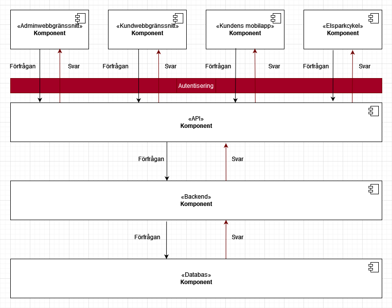

V-team SDS
Innehåll
Inledning
I detta dokument beskrivs ett system som hanterar uthyrning av elsparkcyklar. Systemet ger kunder möjlighet att skapa användarkonton och hyra cyklar, administratörer ges möjlighet att administrera cyklar, laddstationer, parkeringsplatser, städer och information om kunder. Systemet innehåller också ett program för cykeln som styr och övervakar denna.
Bakgrund
Företaget ”Svenska Elsparkcyklar AB” har utryckt ett behov av ett system som kan hantera uthyrning av elsparkcyklar i svenska städer. För närvarande är företaget etablerat och har verksamhet i ”TRE STÄDER” och planerar att expandera till fler med stöd av ett nytt datasystem.
Elsparkcyklar är ett, jämfört med andra fortskaffningsmedel, relativt nytt inslag i vår trafikmiljö. De utgör ett nytt sätt att röra sig och kan med rätt förutsättningar utgöra ett miljövänligt sätt att öka transporteffektiviteten i våra städer. Utmaningarna är dock flera, i en utredning från 2021 påpekar Transportstyrelsen att regelverket kan upplevas som otydligt och att många upplever att de som använder cyklarna inte beter sig korrekt. Transportstyrelsen menar i sin utredning att det framförallt rör sig om att användarna parkerar fel och framför fordonen på ett felaktigt sätt. [1] Sedan 1:a september 2022 får elsparkcyklar inte längre framföras på trottoarer och gångbanor och felparkerade cyklar kan beläggas med avgifter. [2]
Vår förhoppning är att det system som vi presenterar här kommer att kunna lösa en del av dessa utmaningar, inte minst genom att uppmuntra användarna till ett korrekt bruk av cyklarna och genom att automatiskt begränsa var och med vilken hastighet cyklarna kan köras.
Översikt över systemet
Systemets användare
Systemets huvudsakliga användare är kunder (benämns härefter som användare) och administratörer.
Användare har möjlighet att hyra en cykel via en mobilapplikation som också visar status för senaste resan och en historik över gjorda resor. Användare har också tillgång till ett webbgränssnitt där de kan se sina kontodetaljer och en historik över sin användning och betalningar.
Administratörer har möjlighet att via ett webbgränssnitt se status på cyklar och stationer samt få information om kunder. Administratörer kan också lägga till nya cyklar, laddstationer, zoner för parkering, förbjudna zoner och städer.
Systemets delar
Systemet omfattar följande huvudsakliga komponenter:
- Databas med information om cyklar, laddstationer, parkeringszoner, tillåtna zoner att cykla i, användare och administratörer.
- Backend - en komponent som sköter kopplingen mellan API och databas.
- API med möjlighet att koppla in anpassade applikationer, grundsystemet levereras med följande applikationer:
- Administrativt webbgränssnitt där man kan se status för och administrera (ändra, ta bort och lägga till) cyklar, laddstationer, parkeringsplatser, städer och information om kunder.
- Webbgränssnitt för kunden så att denne kan logga in och se sitt konto, historik av utlåning och betalningar.
- Mobilanpassad webbapp för kunden så denne kan se låna/lämna tillbaka cykeln samt se status på senaste resan och historik över gjorda resor.
- Ett cykelprogram som styr och övervakar cykeln (på, av, hastighet, begränsa hastighet, position, behöver service/laddning).
Samtliga applikationer som kopplas mot API:et måste autentisera sin anslutning.
Nedanstående diagram visar en översikt över systemets huvudkomponenter samt hur de relaterar till- och kommunicerar med varandra i olika lager. [3]
Fig 1. Översikt över systemets huvudkomponenter
I följande avsnitt beskriver vi systemets olika delar i detalj.
[2] Jönköpingsposten 3/9 2022 samt https://rkrattsbaser.gov.se/sfst?bet=1998:1276 $4
[3] https://www.oreilly.com/content/software-architecture-patterns/
Bilder på hur systemet kommunicerar med de olika delarna.
Bilder på olika gränssnitt (mock-ups) ?
UML-diagram (draw.io t.ex.)
Komponentdiagram
Administratörsgränssnitt
Systemets administratörsgränssnitt används av behöriga användare för att få en översikt över företagets alla resurser:
- Kunder
- Städer man är verksam i
- Cyklar
- Laddstationer
- Parkeringsplatser
- Områden med särskilda bestämmelser
Administratörsgränssnitt innehåller vyer för att inspektera resurser, skicka kommandon till enskilda cyklar, hantera kundinformation, hantera behörigheter, samt uppdatera systemet med ny data, t ex nya städer man etablerar sig i, nya cyklar, nya parkeringsplatser etc.
Översikt och daglig drift
I vyn för översikt och daglig drift presenteras all information kring cyklar, laddstationer, parkeringsplatser och områden med särskilda bestämmelser för varje stad man verkar i. Vyn är kartcentrerad. I kartan kan man se information om aktuell status för alla tillgängliga resurser i vald stad, samt även filtrera kartvyn baserat på resursers typ, identitet eller status. Denna vy används också för att skicka manuella driftkommandon till enskilda cyklar. Det kan t ex vara ett kommando för att stoppa cykeln, om administratören ser behov av det.
FRÅGA - MAN TÄNKER SIG ATT STOPPKOMMANDO TILL CYKELN BORDE SKE AUTOMATISKT OM EN CYKEL ÅKER FÖR LÅNGT UT TEX.
Hantering av kunder
Kundvyn är en klassisk listvy. Här kan man se en lista på alla företagets kunder, som kan filtreras på stad, användarnamn, antal gjorda resor m m. I denna vyn kan administratören också uppdatera information om enskilda kunder, t ex för att ge en kund en generell rabatt eller rabatt för en enskild resa. Administratören kan också skapa upp nya kunder i denna vy, även om detta i normalfallet hanteras av kunden själv.
Behörighetshantering
Vyn för behörighetshantering används för att skapa användare och tilldela dessa behörigheter i administratörssystemet. Huvudadministratören anges vid konfiguration av systemet, men alla övriga roller hanteras i detta gränssnitt.
Geodatahantering
Systemet har kraftfulla och lättanvända funktioner för att hantera nya marknader och nya resurser. I vyn för geodatahantering kan administratören lägga till nya städer för företaget, samt skapa, uppdatera och radera information om enskilda resurser.
Kundens webbgränssnitt
När en användare besöker kundens hemsida så behöver användaren registera ett konto för att kunna hyra elsparkcyklar. Det finns flera sätt att skapa ett konto. Antingen görs det på sedvanligt vis genom att uppge:
- förnamn
- efternamn
- adress
- faktureringsadress
- användarnamn
- lösenord
Författarens kommentar: smidigt formulär utan bekräftelse av lösenord och en knapp som kan visa lösenordet medan det skrivs. Om vi ska kunna registrera med github så får vi inte namn, efternamn, adress. Ska vi ha med det?
Då användaren loggat in på sitt konto så kan användaren se och fylla på sitt saldo. Saldot används för att bekosta resor med elsparkcykel. Användaren behöver inte ha ett positivt saldo utan kan sedan tidigare ha valt att betala i efterhand via diverse betaltjänster.
Användaren kan också se sin färdhistorik som innefattar:
- ID på resan
- Startdatum (2000-01-01)
- Starttid (11:11 LT)
- Slutdatum (2000-01-01)
- Sluttid (11:11 LT)
- Startpunkt (lat/long, geografiskt närliggande namn?)
- Slutpunkt (lat/long, geografiskt närliggande namn?)
- Kostnad för resan (kronor, ören)
Kundens app
Elsparkcyklar som är registrerade i systemet för uthyrning och inte upptagna eller under service kan av en användare väljas för uthyrning. I verkligheten görs detta genom att scanna en QR-kod som identifierar elsparkcykeln. [referens](https://turiststockholm.se/sightseeing-guider/hyra-elsparkcykel-i-stockholm-med-voi/). I vårt program indentifieras en elsparkcykel genom att från en kartbild välja elsparcykelns ikon vilket ger användaren möjligheten att välja vald elsparkcykel för uthyrning.
Då en uthyrning påbörjats så kan användaren manövrera elsparkcykeln. De manövreringsmöjligheter som finns är:
- elsparkcykelns hastighet (gashandtag)
- svänga vänster och höger genom att svänga med styret
- bromsa (finns det mer än en broms???)
Användaren kan också få information från den hyrda elsparkcykeln i form av:
- batterinivå
- behov av service (med anledning av t.ex. punktering, trasiga lampor eller dåliga bromsar)
Då användaren avslutar sin hyrning av elsparkcykeln så debiteras användarens konto automatiskt för färden. Färdens kostnad kan variera beroende på:
- tid på dygnet (tillgång och efterfrågan)
- om cykeln flyttats från fri parkering (valfri parkeringsplats utanför rekommenderade parkeringszoner) till en mer önskvärd parkeringsplats
- om cykeln parkeras genom fri parkering
Denna kartbild visar var samtliga laddstationer och rekommenderade parkeringsplatser finns.
Denna kartbild visar var samtliga lediga elsparkcyklar finns att hitta.
Cykelns program
En elsparkcykels huvudsakliga uppgift är att hela tiden meddela sin positon och hälsa via API’et.
Elsparkcykelns program har bara information som rör sin egen position samt hälsa och övrig information som rör dess omgivning skickas till den från backend.
- Uthyrd till en användare
- användare avslutar hyran
- Begränsa hastighet när den befinner sig i specifika zoner
- Stoppa elsparkcykeln ifall den är utanför tillåtet område.
- Intagen på service
- Service utförd
I varje elsparkcykel finns sensorer som känner av hälsan och när den ändras så skickas den informationen till backend.
- Batterinivån är låg
- En lampa har gått sönder
- Punktering etc.
Det är endast när elsparkcykelns status har blivit ändrad till ”uthyrd” eller på ”service som elsparkcykeln är upplåst och går att köra. Så fort dess status återvänder till ”ledig” så stängs den av och bromsas, och det enda sättat att flytta den är då att fysiskt lyfta upp och bära bort den. Blir det rörelse på en elsparkcykel som ej är uthyrd skickas då en varning omgående till backend, och sedan med ett tätt intervall tills den återigen står stilla. Detta möjliggör att personal kan hitta eventuellt stulna elsparkcykelar.
Tusentals elsparkcyklar finns i systemet. Så för att minimera belastningen på API och backend så uppdaterar dom sin position med olika intervall beroende på olika faktorer.
- En uthyrd elsparkcykel i rörelse skickar positionsdata ofta
- En ledig och stillastående elsparkcykel skickar positionsdata sällan
- En elsparkcykel på laddning eller service skickar positionsdata sällan
Varje elsparkcykel sparar också en egen historik över alla sina resor.
- Resans användare
- Resans startposition samt klockslag
- Resans slutposition samt klockslag
REST-API
(Hur göra en intern github länk till Richards fantastiska API spreadsheet?) (Känns som jag behöver skriva lite mer i denna del men kommer inte på vad.)
Systemets applikationer använder ett REST-API för att kommunicera med systemets backend.
Dokumentation
För att underlätta för tredjepartsleverntörer att bygga externa tjänster och applicationer är REST-API’et väldokumenterat.
- Länk till dokumentationen?
- Ett exempel från dokumentationen på en enskild endpoint?
Versioner
REST-API’et har byggts för att vara framtidssäkert där uppdateringar och tillägg hanteras med versionsnummer som en del i URI:n.
- …/v1/endpoint
Autentisering
Alla applikationer som använder REST-API’et måste autentisera (JWT?) sig för att kontrollera att endast endpoints som rör applikationen finns tillgängliga.
Godkänd autentisering
En applikation för administratörer kan se alla användare i systemet.
GET ../v1/users/
{
"data": [
{
"id": 1,
"name": "John Doe",
...
},
{
"id": 2,
"name": "Jane Doe",
...
}
]
}
Misslyckad autentisering
En applikation för användare kan inte se alla användare i systemet.
GET ../v1/users/
{
"errors": {
"status": 401,
"source": "/users",
"title": "Authorization failed",
"detail": "No valid API key provided."
}
}
Backend
TODO
Databas
Information systemets olika entiteter samlas i en databas. En entitet kan t.ex. vara ”användare”, ”stad” eller ”administratör”. Varje entitet har en egen tabell i databasen. I detta avsnitt beskrivs vilka entiteter som finns i databasen, vilka egenskaper de har och hur entiteterna relaterar till varandra.
Den databas som ingår i systemet är en DATABASTYP. Systemet kommunicerar med databasen via ORM/SQL/Redis? (Byggs ut när vi har bestämt oss)
Följande tabeller/entiteter finns i databasen:
Stad
Denna tabell innehåller information om städer. Varje stad har:
- ett unikt id som identifierar staden i systemet
- ett namn
- en geografisk position
En stad har också relationer till andra entiteter den kan ha en eller flera:
- Elsparkcyklar
- Laddstationer
- Parkeringsplatser
- Zoner
- Verkstäder?
Elsparkcykel
Denna tabell innehåller information om elsparkcyklar. Varje elsparkcykel har
- ett unikt id
- en position
- en status, ett värde som visar om elsparkcykeln är ok, laddas eller behöver service
- en batterinivå
- en uthyrningsstatus som visar om elsparkcykeln är uthyrd eller inte
- en hastighet
En elsparkcykel har också relationer till andra entiteter, den kan ha:
- en användare (om elsparkcykeln är uthyrd)
- en eller flera (historiska) resor
Laddstation
Denna tabell innehåller information om laddstationer. Varje laddstation har:
- ett unikt id
- en position
Bör vi också koppla elsparkcyklar till specifika laddstationer?
Parkeringsplats
Denna tabell innehåller information om parkeringsplatser, både tillåtna och otillåtna. Varje parkeringsplats har:
- ett unikt id
- en position
- en typ som talar om ifall detta är en ”+parkeringsplats” en vanlig parkeringsplats eller en förbjuden parkeringsplats
Zon
Denna tabell innehåller information om särskilda zoner. Varje zon har:
- ett unikt id
- en position
- en typ som visar om det är tillåtet att färdas i zonen eller inte
- en hastighetsbegränsning som bestämmer högsta tillåtna hastighet i zonen?
Verkstad (ska verkstäder vara med?)
Denna tabell innehåller information om verkstäder där elsparkcyklar servas och repareras. Varje verkstad har:
- ett unikt id
- en position
Användare
Denna tabell innehåller information om användare. Varje användare har:
- ett unikt id
- ett förnamn (får vi detta med OAuth?)
- ett efternamn (får vi detta med OAuth?)
- en adress (får vi detta med OAuth?)
- en faktureringsadress (får vi detta med OAuth?)
- ett användarnamn (behöver vi detta med OAuth?)
- ett lösenord (behöver vi detta med OAuth?)
- en e-postadress
- ett saldo
- en position? (behöver vi användarnas positioner?)
- en status som visar om användaren är inloggad eller inte? (behöver vi detta?)
En användare har också relationer till andra entiteter, den kan ha:
- en elsparkcykel (om användaren hyr en cykel)
- en eller flera (historiska) resor
Administratör
Denna tabell innehåller information om administratörer. Varje administratör har:
- ett unikt id
- ett användarnamn
- ett lösenord
- en typ som beskriver administratörens behörighet (huvudadministratör eller vanlig administratör)
Resa
Denna tabell innehåller information om resor. Varje resa har:
- ett unikt id
- en startposition
- en slutposition
- en starttid
- en sluttid
Nedanstående bild visar de entiteter som förekommer i databasen, deras attribut och inbördes relationer.
Exempel bilder
